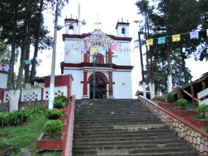
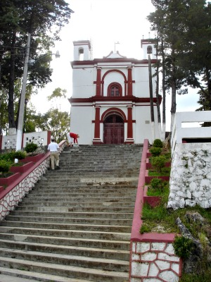
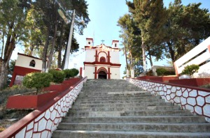
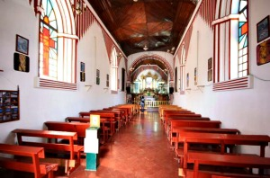
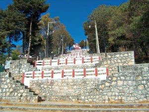

Este pequeño recinto fue fundado hacía el siglo XVI, remodelado a finales del siglo XVIII y vuelto a reconstruir luego de muchos destrozos. Su aspecto es de gran sencillez y es uno de los monumentos importantes de la ciudad. Se localiza en la cúspide del Cerro de San Cristóbal.
Se encuentra ubicado en la calle Hnos. Dominguez a 2 cuadras del arco del carmen.
Si usted se encuentra ubicado en la plaza de la paz viendo de frente hacia la catedral puede caminar hacia su derecha pasando por la plaza 31 de Marzo como referencia encontrará el Banco Santander y Frente a este la Farmacia Similar entre estos dos lugares encontrará el andador eclesiástico, continue caminando tres cuadras por el andador hasta llegar al Arco del Carmen de vuelta a la derecha y justo frente a usted verá el cerrito, camine 2 cuadras para llegar hasta las gradas y subir.
En el lugar usted puede realizar actividades como:
* Fotografía
* Visita a lugares históricos
* Visita a iglesias
* Manifestaciones Religiosas





posicione el mouse sobre las imágenes